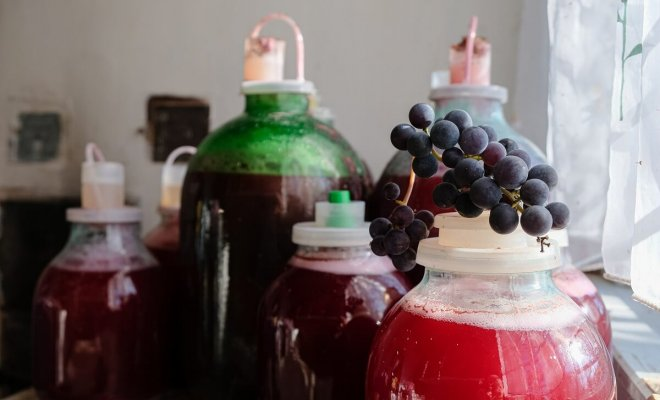
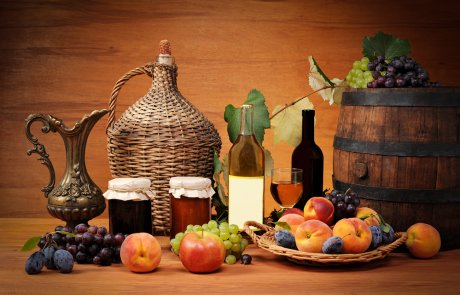

shutterstock.com / Ganna Zelinska
Как сделать вино из забродившего варенья, компота? На самом деле гораздо проще, чем может показаться на первый взгляд. Более того, приготовить этот алкогольный напиток можно даже из забродивших ягод – и все получится!
Иногда для того чтобы найти ингредиенты для вина, бывает достаточно всего лишь открыть холодильник и хорошо поискать. На какой-то из его полок, наверняка, могли залежаться сырые ягоды или плоды, увы, теперь уже несвежие. А для верности можно еще спуститься в погреб или подвал. С целью отыскать там какие-нибудь плодово-ягодные заготовки, которые изначально существовали в виде варенья и компотов, но по какой-то причине пришли в негодность. Они-то вам и нужны вместе с забродившими ягодами из холодильника.
Приготовленное такими способами вино не должно быть кислым: если в нем чувствуется привкус уксуса, то оно непригодно к употреблению и его нужно немедленно вылить!
Вино из забродившего варенья

Вам понадобятся: 1,5 кг варенья (малиновое, смородиновое, яблочное, сливовое), 1,5 л воды, 1 стакан сахара, 1 ст.л. изюма.
Приготовление. Варенье смешайте с теплой прокипяченной водой, добавьте полстакана сахара и изюм. Перелейте смесь в большую бутыль, на горлышко наденьте специальный затвор или перчатку с проделанной дырочкой и оставьте на пару недель бродить в теплом месте. По окончании брожения вино процедите с помощью марли в чистую емкость, добавьте еще полстакана сахара и поставьте в темное место настаиваться. По истечении 2-3 месяцев выдержанное вино аккуратно перелейте в подготовленные бутылки, используя трубку. Закупорьте пробками.
Забродившее варенье не только не испортит вкуса напитка, но и сделает его более насыщенным.
Можно также приготовить вино и из того варенья, которое еще не успело забродить.
Вино из забродившего компота
Вам понадобятся: 3 л забродившего вишневого компота, 500 г сахара, горсть изюма.
Приготовление. Компот процедите через марлю, добавьте сахар и изюм. Плотно наденьте на горлышко емкости тонкую резиновую медицинскую перчатку, проткнув пару "пальцев" иголкой. Далее – действуйте по вышеописанной схеме и поставьте банку в теплое место. Когда брожение затихнет, получившееся вино процедите и аккуратно, не задевая осадка, перелейте в другую емкость. Через месяц продегустируйте и разлейте по бутылям, крепко закупорив.
Из вишни можно легко приготовить не только домашнее вино, но еще настойку, наливку и ликер.
Вино из забродивших ягод и плодов
Ягоды и плоды с плесенью для приготовления домашнего вина не подходят – поэтому их придется выбросить. В остальном компот из несвежих ягод готовится точно так же, как и из свежих.
Вам понадобятся: 1 кг забродивших спелых плодов или ягод, 1 кг сахара, 500 г горячей воды, 300 г водки.
Приготовление. Ягоды промойте, обсушите, добавьте к ним сахар и измельчите в блендере. Поместите смесь в стеклянный сосуд с широким горлышком и залейте горячей водой. Накройте марлей и оставьте для брожения в помещении с температурой не ниже 20°С. Через 5-7 дней снимите с напитка пену, сложите марлю в несколько слоев и процедите его. Добавьте в напиток водку, перемешайте и разлейте по стеклянным бутылкам. Поставьте в темное холодное место на несколько суток.
Вся посуда для приготовления домашнего вина должна быть чистой, стерилизованной и просушенной. Если же ваши ягоды не успели испортиться, сварите из них какой-нибудь необычный компот.
Вином, приготовленным по таким необычным рецептам, вы сможете удивить всех своих гостей и знакомых.